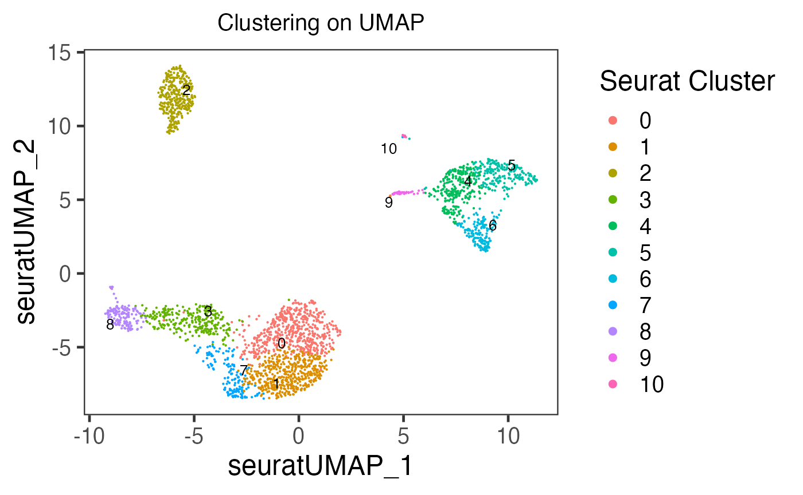
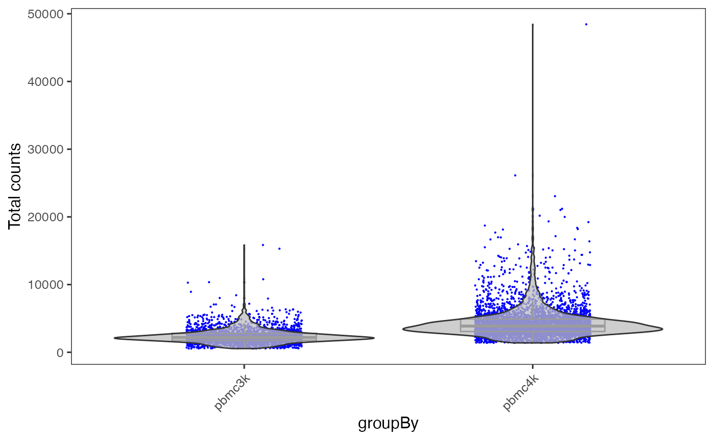
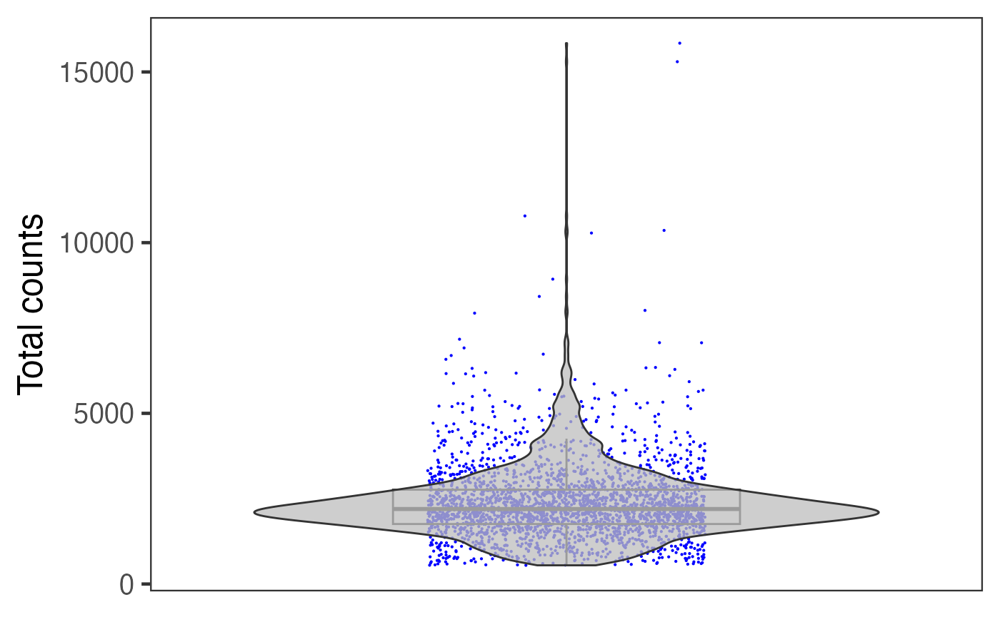
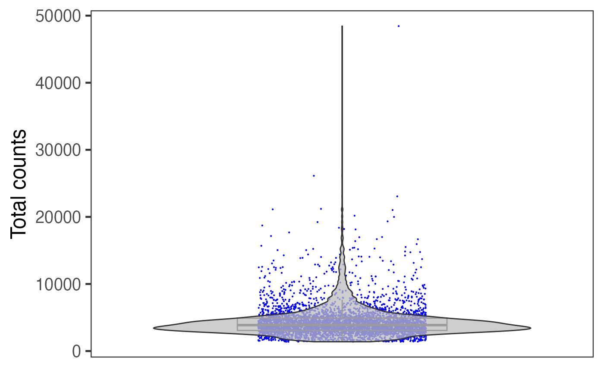

Introduction
Single Cell Toolkit (singleCellTK, SCTK) allows users to create various types of plots, including scatter plot, bar plot, violin plot and heatmap. This documentation will focus on the first three types of plot. For heatmap generation, please refer to the Heatmap Documentation.
To view detailed instructions on how to generate these visualizations, please select ‘Interactive Analysis’ for shiny application or ‘Console Analysis’ for using these visualizations on R console from the tabs below:
Workflow Guide
Entry of the Panel

SCTK UI provides a general portal, CellViewer, for cell level visualization, including the functionality to create scatter plot, bar plot, and violin plot. Users should find the Cell Viewer as instructed in the screenshot above. This documentation will start with a quick example and then talk about the detail.
Quick Example
Here we provide a common case of plotting a UMAP with clusters labeled. We take the frequently used “PBMC3k” dataset, provided by 10X, as an example. The detailed screenshot for each prerpocessing step will not be included, but users can refer to the documentation of those steps within other pages.
Preprocessing Steps
- The example “PBMC3k” dataset can be imported at the SCTK landing page. For a quick demonstration, QC and filtering are skipped, but it is always recommended to have this done.
- Normalize the raw counts with “Seurat lognormalize” method
- Use the log-normalized assay to produce a UMAP by using Seurat’s method. Note that usually it is recommended to find the variable features and calculate the PCA before reaching to the UMAP, but “SeuratUMAP” has integrated all these steps at one click.
- For the clustering, select the PCA embedding (produced when calculating the UMAP) as the matrix to perform Seurat’s louvain algorithm on.

In Cell Viewer:
- Locate at “Scatter Plot” tab
- Select the UMAP at “Select Coordinates”.
- In “Color”, choose to color by “Cell Annotation”
- Select the clustering result from the cell annotation option list, which comes out after Step 3.
- Click on “Plot” button
Step Specific Introduction
The procedure of creating a single plot in Cell Viewer can be generalized as three steps: axis selection, color specification, and peripheral setting.
Axis

In “scatter plot” tab, the X-/Y-axis can be fully customized, while quick access for existing dimension reduction results will also be listed. “Fully customized” means an axis can be a dimension of a dimension reduction, the expression of a feature from an assay, or one of the cell annotations. In “bar plot” and “violin plot” tab, the X-axis is limited to cell annotation level, while the Y-axis can still be fully customized.
Color

The color setting determines the color of each dot or bar in the plot. In “Scatter Plot” tab, colors can be set by the value of a dimension from a dimension reduction embedding, the expression value of a gene from an assay, one of the cell annotation, or a single color for all dots (cells). While SCTK only supports single color plotting for bar plot and violin plot.
Other Settings

Besides the informative settings, Cell Viewer gives users the control on title, legend, axis labels, dots and etc., as shown in the screenshot above and can be freely explored.
SCTK provides plenty of methods to visualize users analysis, including the plotting for intermediate attribute for parameter decision, traditional scatter/box/violin plot for cells, and heatmap. Additionally, there are also wrappers of the base functions that are used for analysis type specific visualization. (e.g. QC metric plotting, differential expression heatmap) A full list of visualization functions can be found in the reference tab of this documentation site.
Workflow specific visualization should be introduced in the documentation of the related steps (e.g. QC metric plotting, HVG plotting, or differential expression plotting). Here, we would provide some examples for the most frequent use case.
Example 1: Scatter plot of cells
Here we will take PBMC3k dataset, from “10X,” as an example. First we will do a quick clustering with the Seurat curated workflow implemented in SCTK. Then we will present the method to generate a scatter plot of the UMAP of this dataset, with clusters labeled by color.
Preprocessing Steps
library(singleCellTK)
sce <- importExampleData("pbmc3k")
# It is recommended to deduplicate the feature names, as this example data does
# have duplicated feature names that might cause failure in downstream analysis.
sce <- dedupRowNames(sce)
# QC and filtering skipped for quick demonstration
# Users are **not recommended** to skip it in practical analysis
sce <- runSeuratNormalizeData(sce, "counts")
sce <- runSeuratScaleData(sce)
sce <- runSeuratFindHVG(sce)
sce <- runSeuratPCA(sce)
sce <- runSeuratFindClusters(sce)
# With `runSeuratFindClusters()`, the clustering result would be saved to the
# `colData` slot with the name "Seurat_louvain_Resolution0.8" by default.
# Have a check on the summary of the clustering result
table(sce$Seurat_louvain_Resolution0.8)##
## 0 1 2 3 4 5 6 7 8 9 10
## 550 486 349 303 257 236 162 158 149 36 14
sce <- runSeuratUMAP(sce)
plotSCEDimReduceColData(inSCE = sce, reducedDimName = "seuratUMAP", colorBy = "Seurat_louvain_Resolution0.8", legendTitle = "Seurat Cluster", title = "Clustering on UMAP")
As users might have tried, the essential input are inSCE, reducedDimName, and colorBy. Other arguments are all optional, but users can explore them to best clarify their intention.
Additionally but occasionally, shape argument is also useful for double level annotating.
In SCTK, there are plotting functions that are aimed for other attributes other than colData and reducedDim. For example, plotSCEDimReduceFeatures() focuses on reducedDim and feature expression, In most of base SCTK plotting functions, which starts with “plotSCE,” users can easily figure out the usage by checking the function manual and see which arguments are required.
Example 2: Plots with multiple samples
When there are multiple samples in one dataset and it is necessary to have separation on them, users can invoke sample or groupby argument in most of base SCTK plotting functions.
pbmc3k <- importExampleData("pbmc3k")
pbmc3k <- dedupRowNames(pbmc3k)
pbmc4k <- importExampleData("pbmc4k")
pbmc4k <- dedupRowNames(pbmc4k)
sceList <- list(pbmc3k = pbmc3k, pbmc4k = pbmc4k)
# By combining, a "sample" colData annotation is set by default with the
# names of sceList.
sce <- combineSCE(sceList = sceList, by.r = colnames(rowData(pbmc3k)), by.c = colnames(colData(pbmc3k)), combined = TRUE)
sce <- runPerCellQC(sce)
plotSCEViolinColData(inSCE = sce, coldata = "total", groupBy = "sample", ylab = "Total counts")
Otherwise, if users need individual plot for each of the sample, or indeed make individual plots by any categorical groupingon cells, use sample argument.
plotSCEViolinColData(inSCE = sce, coldata = "total", sample = sce$sample, ylab = "Total counts")